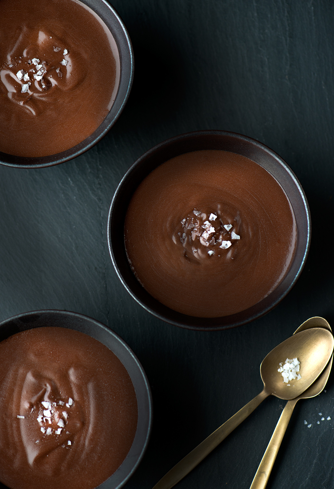

4 pers
Denne tekst er denn irriterende teksten man altid må scrolle igennem for at få den egentlige opskrift. Vi har sparret den væk på oppskrifterne, men på UKAS RETT må der vel være litt anderledes. Velbekomme!
Du starter selvfølgelig med å finne sjokolade som du har glemt igjen i et skap. Bor du i et kollektiv stjeler du sjokoladen alle de andre har. Prøve å samle så mye sjokolade du kan for denne retten. 1 klase god sjokolade betyr så mangt. 1 klase er forskjellig fra person til person. Nettopp dette er grunnen til vår siste ingrediens som er "masse kjærlighet". Jo mer kjærlighet det er i lufte jo mer sjokolade er det behov for. I følge nyere forskning er jo mer å ta i jo mer å være glad i. Spiser du sjokolade eller ikke så anbefales det på det sterkeste å lage det uansett. Du kan enten stirre på det eller la noen andre stirre/spise det. Vi vet alle hva sjokolade kan gjøre med visse mennesketyper. Nei det er kanskje ikke for alle, men vi anbefaler alle som er innom denne siden å absolutt ta sjansen. Du smelter altså sjokoladen du har stjålet eller funnet på bakken. Denne smelter du gjerne i en kasserolle av metall eller lignende. Dette gjøres gjerne i et vannbad. dette vannbade må være ganske varmt for å kunne smelte sjokoladen så det hadde vært fint å koke vannet før la til dette badet av vann. rør litt i kasserollen med smeltet sjokolade og nyt aromaene som flyter rundt omkring der du befinner deg som nettopp har fått et nytt liv. stivpisk eggehvitene og bland inn veldig forsiktig med noen eggeplommer. Ta deretter sjokoladen i en bolle gjerne av sølv eller et metall som er taktilt og fryktinngytende dette for at andre mennesker som kanskje befinner seg der du er ikke finner på å stirre eller få i seg aromaene som er ment for deg og de du har lagd denne vidunderligheten for. Du setter det altså i kjøleskapet der det er free for all. Noe det nå ikke er på grunn av den smarte teknikken din. Serveres med gullbestikk